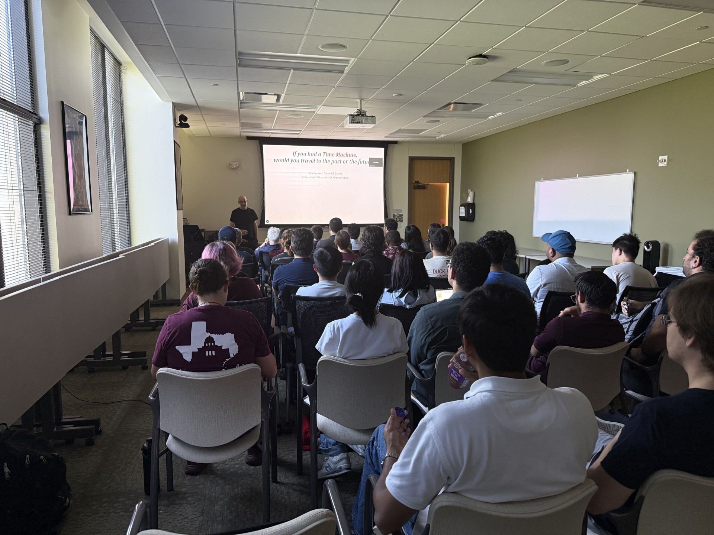

Seminar chair
Ideas at the intersection
Visual Computing
& Interactive
Media.
The VCIM Seminar Series
A meeting point for research, creative technology, and new perspectives. Part of the VCIM Ph.D. program at Texas A&M University.
Explore the talks New ideas.
Continuing conversations.
Continuing conversations.
Computer visionInteractive mediaComputer graphicsArtificial intelligenceExtended reality
01 / The conversations
A semester of perspectives.
Discover the people and ideas
shaping our research community.
Fall 2026
In progressNo talks found
Try a different speaker or title, or reset the filters.
Dates and titles are updated as the series develops.
Progress begins with a conversation.
The Visual Computing and Interactive Media Seminar Series brings research and creative practice into the same room. It is a space to exchange ideas, encounter new methods, and connect perspectives across visual computing and interactive media.
Part of the VCIM Ph.D. program in the College of Performance, Visualization & Fine Arts at Texas A&M University, the series connects our doctoral community with speakers working across computation, interaction, and visual expression.
A continuing series. A growing community.

03 / The people behind the series
Making the connection.
The team bringing our
seminar community together.
Administrative support
Staci Dunn
Jackie Rangel
Sabarish V. Babu
With thanks for the coordination that makes each semester possible.